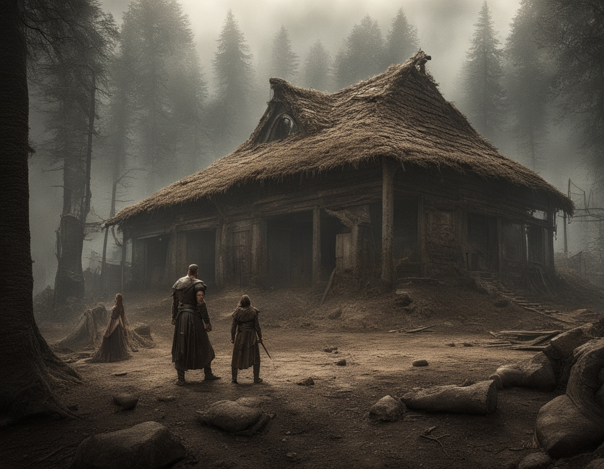

Welcome to this early Amazon like website. There is a big difference though.
This site will not grow to monopolistic portions in hopes of launching a phallic ship into high orbit
just to impress my girlfriend. Enjoy the free Original and AI content bezos.
The Watch People is a story about a group of people who live in a world where time is currency. In this world,
fractional reserve banking to create wealth based on debt is impossible.
In the small town of Willow Creek, something strange was happening. Ants, of all creatures, were seen gathering materials and constructing what appeared to be a railroad...
Once upon a time, in a remote village surrounded by dense forests, there stood an old abandoned bungalow. The villagers whispered tales of horror and mystery...

The Watch People is a story about a group of people who live in a world where time is currency. In this world,
fractional reserve banking to create wealth based on debt is impossible. It would fracture the entire universe and result in
a time paradox of epic proportions greater than that in the hit film from 1989, MILLENNIUM, where an NTSB investigator
discovers a time-traveling woman while investigating an airplane crash. This is real, not AI generated. It's a great film,
everyone should see it.
In the small town of Willow Creek, something strange was happening. Ants, of all creatures, were seen gathering materials and constructing what appeared to be a railroad, right in the heart of the town. The townspeople were in disbelief as they watched the tiny insects diligently working day and night on their mysterious project.
The railroad was unlike anything the town had ever seen before. It twisted and turned in intricate patterns, with tracks leading off into the woods and disappearing into the shadows. The townspeople whispered amongst themselves, wondering what could possibly be the purpose of such a bizarre construction.
Rumors began to spread about the ants and their railroad. Some said that they were building a path to the underworld, while others believed they were trying to escape some unseen danger. The fear and paranoia in Willow Creek grew with each passing day, as the ants continued their work, undeterred by the growing tension around them.
As the weeks went by, strange things began to happen in the town. People reported hearing eerie noises in the night, like the sound of a train whistle blowing in the distance. Others claimed to have seen ghostly figures walking along the tracks of the ant railroad, disappearing into thin air as quickly as they had appeared.
The townspeople became convinced that the ants were up to something sinister, and a group of brave volunteers decided to investigate. Armed with flashlights and determination, they set out to follow the railroad tracks into the dark woods beyond the town.
What they found there was beyond anything they could have imagined. The ants had built a network of tunnels and caverns underground, connecting to
a massive underground city filled with strange and terrifying creatures. The volunteers were horrified as they stumbled upon the true purpose of the ant railroad - to transport souls from the surface down.
Once upon a time, in a remote village surrounded by dense forests, there stood an old abandoned bungalow. The villagers whispered tales of horror and mystery that surrounded the eerie bungalow, claiming that people who entered never returned. Some even spoke of hearing blood-curdling screams that echoed through the night.
Despite the ominous warnings, a group of brave individuals in their mid-thirties decided to investigate the truth behind the bungalow. They were thrill-seekers, always in search of new adventures and unexplained mysteries. With flashlights in hand, they ventured into the darkness, their hearts pounding with excitement and fear.
As they entered the bungalow, they were greeted by a musty smell that filled the air. The walls were covered in peeling wallpaper, and cobwebs hung from the ceilings. The group split up to explore different rooms, each one hoping to uncover the secrets hidden within the walls of the bungalow.
Suddenly, a blood-curdling scream pierced the silence, causing the group to freeze in terror. They quickly regrouped and followed the sound, their footsteps echoing through the empty corridors. The source of the scream led them to a hidden staircase that descended into darkness.
With trepidation, they descended into the depths of the bungalow, their flashlights casting eerie shadows on the walls. As they reached the bottom, they were greeted by a horrifying sight – a group of shadowy figures lurking in the darkness, their eyes gleaming with malice.
Realizing the danger they were in, the group tried to flee, but the bungalow seemed to twist and turn, the walls shifting and changing before their eyes. It was as if the bungalow itself was alive, trapping them in its evil clutches.
As they ran through the endless corridors, they could hear the sinister laughter of the bungalow people echoing in their ears. The group realized that they were not alone – they were being hunted by something far more sinister than they could have ever imagined.
The bungalow people moved with terrifying speed, their twisted forms darting in and out of the shadows. The group tried to fight back, but their weapons seemed useless against the supernatural beings that pursued them.
Just when all hope seemed lost, they stumbled upon a hidden chamber deep within the bungalow. Inside, they found ancient artifacts and symbols etched into the walls, revealing the dark history of the bungalow and its inhabitants.
As they deciphered the symbols, they learned the horrifying truth – the bungalow people were cursed beings, trapped between the worlds of the living and the dead. They fed on the fear and anguish of those who dared to enter their domain, using their victims as vessels to prolong their own twisted existence.
With this newfound knowledge, the group knew they had to find a way to break the curse and escape the clutches of the bungalow people. Armed with the power of ancient magic, they faced off against the malevolent beings in a final showdown that would decide their fate.
In a blaze of light and shadow, the curse was broken, and the bungalow people vanished into the darkness from whence they came. The group emerged from the bungalow, shaken but alive, their hearts still pounding with the memory of their harrowing ordeal.
As they returned to the village, they knew they had faced true horror and survived to tell the tale. The bungalow would forever remain a dark and haunted place, a reminder of the evil that lurked in the shadows, waiting to ensnare those foolish enough to seek it out. The group vowed never to speak of their experiences again, lest the bungalow people return to claim them once more.